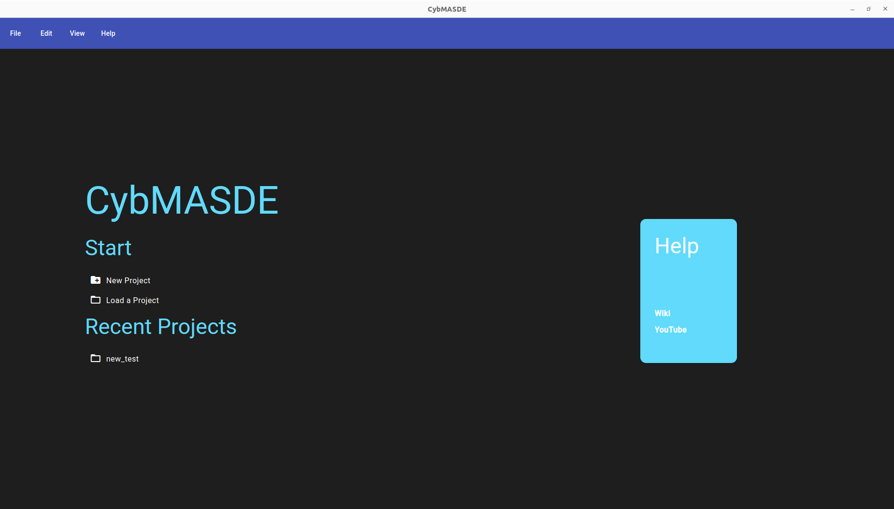
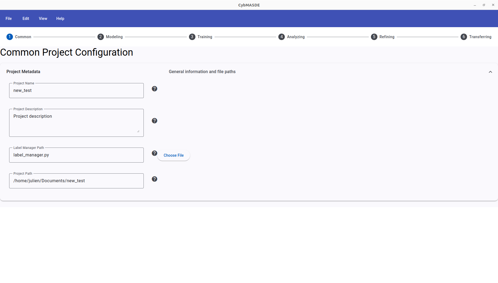
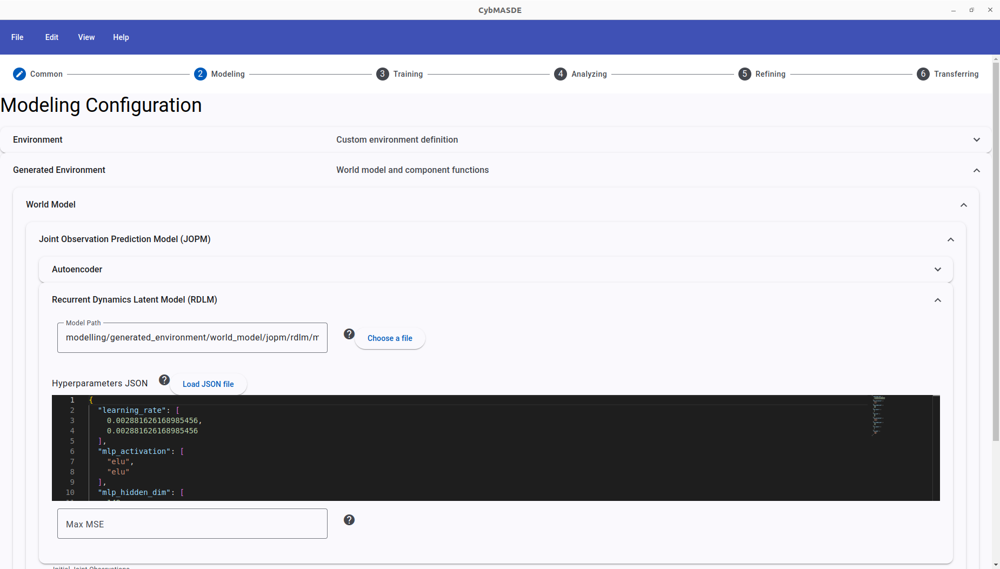
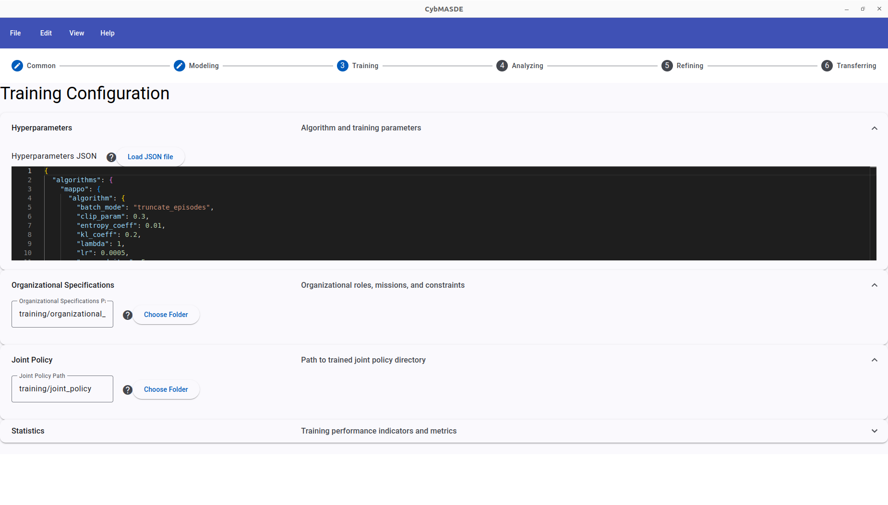
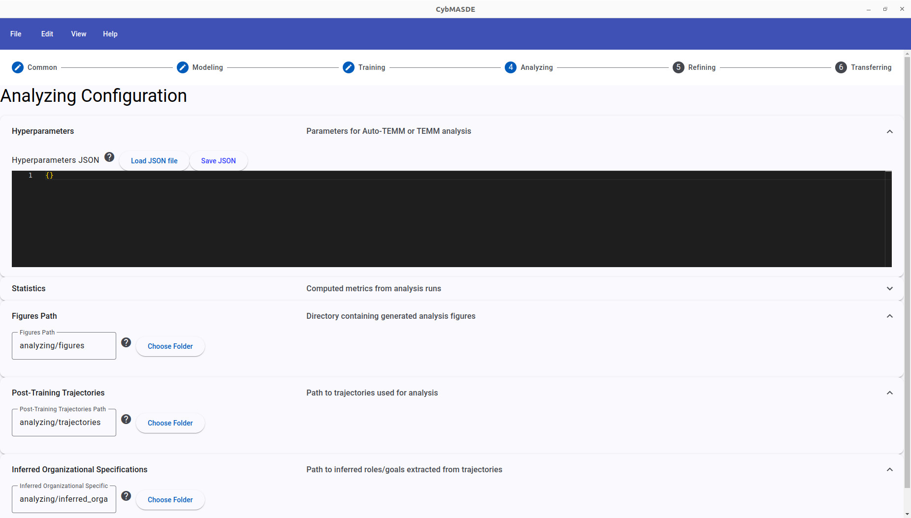
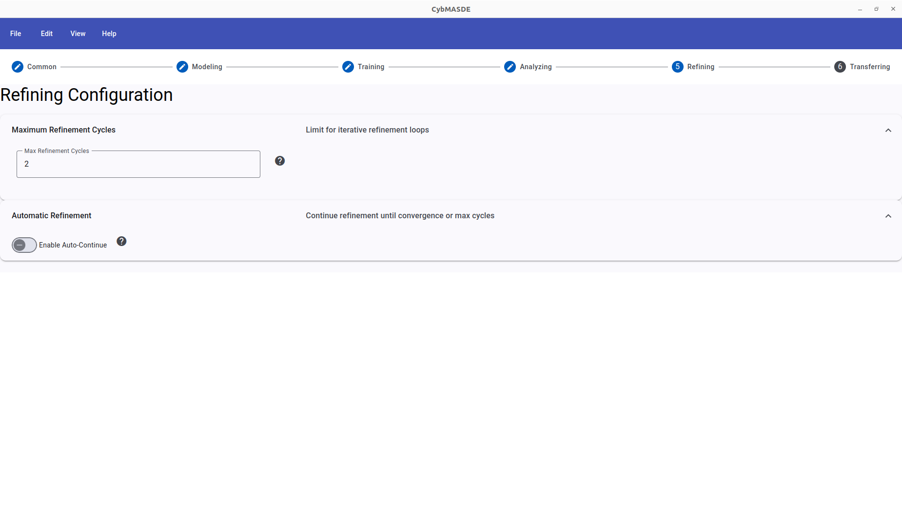
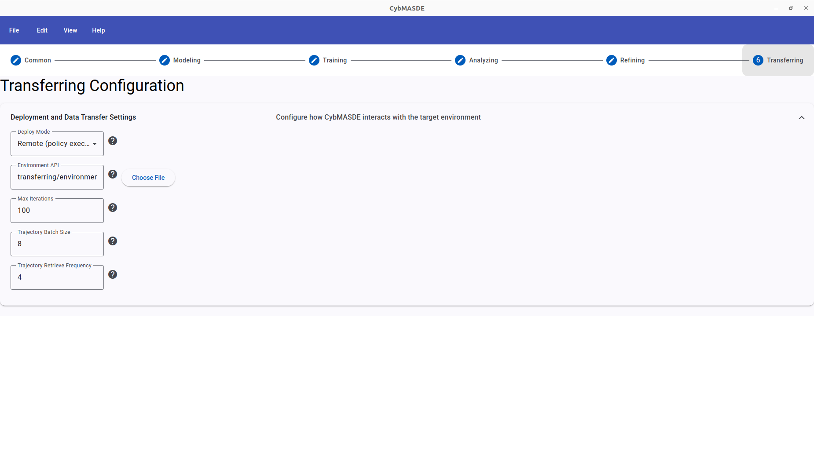
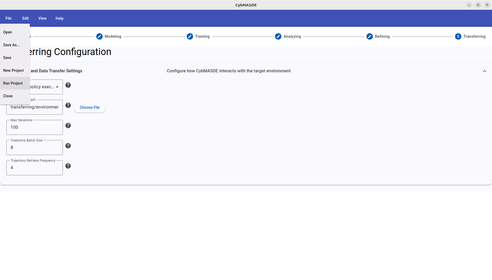
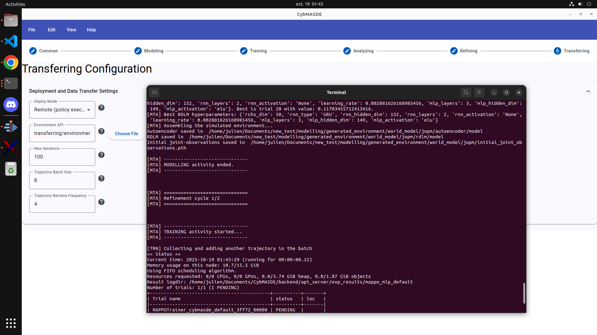
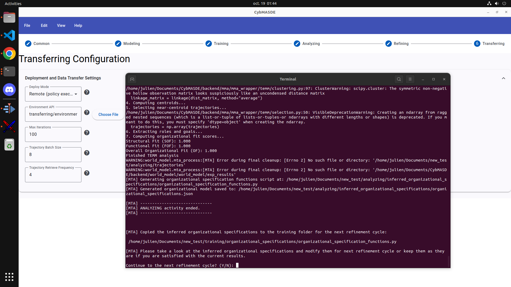

CybMASDE - Graphical User Interface (GUI) Reference
The CybMASDE Graphical Interface provides a visual, user-friendly way to configure and run the entire MAMAD workflow (from Modeling to Training, Analyzing, Refining, and Transferring).
It is designed for researchers and engineers who prefer graphical interactions over CLI scripting.
🚀 Launching the Interface
Once CybMASDE is installed, to launch the GUI make sure your environmental API (Overcooked-AI REST API complying with environment_api.py in the transferring folder in project) is running, then from the main project directory open two terminal tabs.
In the first tab, open the backend server:
cd backend
source env/bin/activate # POSIX; use env\Scripts\activate on Windows
cd api_server
python server.py
In a second tab, open the frontend with:
cd frontend
npm run start
Then, an native-like desktop Electron window should appears.\ If nothing appears, you better check logs at opening your browser at: http://localhost:4200
From there, you can:
- Create and edit project configurations visually,
- Launch and monitor the transferring and mta processes,
- Inspect Auto-TEMM analysis results interactively.
- ...
The interface will open in a desktop window (based on Electron or PyQt, depending on your build). You should see the home screen similar to the one below.
🏠 Home Screen

The Home Screen is the starting point for all CybMASDE workflows. It provides quick access to project management and help resources.
Sections
-
Start
-
New Project – Create a new CybMASDE project with default folder structure and configuration files.
- Load a Project – Open an existing project directory.
-
Recent Projects
-
Displays the list of recently opened projects for quick access.
-
Help Panel
-
Links to the official Wiki and the YouTube tutorial.
⚙️ Common Configuration

This tab defines global project parameters shared across all stages.
Fields
| Parameter | Description |
|---|---|
| Project Name | Name of your current CybMASDE project |
| Project Description | Short text describing the experiment |
| Label Manager Path | Path to your custom label_manager.py file |
| Project Path | Root directory where all configurations and outputs will be stored |
🧩 Modeling Configuration

The Modeling tab allows you to define or generate your world model. You can load existing models or trigger automatic world-model creation using VAEs and RNNs.
Sections
-
Environment
-
Define the structure of your simulated or handcrafted environment.
-
Generated Environment
-
Choose between handcrafted and world-model-based generation.
-
World Model
-
Configure Joint Observation Prediction Model (JOPM) and Recurrent Dynamics Latent Model (RDLM).
-
Hyperparameters JSON
-
Load or edit hyperparameters for VAE and RDLM optimization.
-
Output Metrics
-
Observe metrics such as Max MSE for reconstruction performance.
🧠 Training Configuration

The Training tab configures the Multi-Agent Reinforcement Learning (MARL) phase.
Sections
-
Hyperparameters JSON
-
Edit training configuration directly as JSON (e.g., learning rate, PPO parameters, epochs).
-
Organizational Specifications
-
Path to organizational rules and constraints (MOISE+).
-
Joint Policy
-
Directory where trained policies will be stored.
-
Statistics
-
Monitored metrics such as reward evolution and convergence speed.
Example configuration snippet (training hyperparameters):
{
"algorithms": {
"mappo": {
"lr": 0.0005,
"clip_param": 0.3,
"entropy_coeff": 0.01
}
}
}
📊 Analyzing Configuration

The Analyzing tab handles Auto-TEMM and TEMM-based trajectory analysis and explicability metrics.
Sections
| Field | Description |
|---|---|
| Hyperparameters JSON | Parameters for analysis methods and clustering |
| Figures Path | Directory for generated analysis plots |
| Post-Training Trajectories | Folder containing trajectories from training |
| Inferred Organizational Specifications | Folder containing inferred role/goal definitions |
Output metrics include:
- Reward distributions
- Organizational fit (FOF, SOF)
- Stability and explainability indices
♻️ Refining Configuration

The Refining tab manages iterative cycles that improve model performance and organizational coherence.
Sections
| Parameter | Description |
|---|---|
| Maximum Refinement Cycles | Defines how many refinement loops are allowed |
| Automatic Refinement | Enable Auto-Continue for continuous retraining until convergence |
Typical use: After each analysis, inferred organizational specifications are re-injected into training to guide agent behavior improvements.
🌐 Transferring Configuration

The Transferring tab controls how CybMASDE interacts with real or simulated infrastructures.
Sections
| Parameter | Description |
|---|---|
| Deploy Mode | Select between Remote (via API) or Direct (local execution) |
| Environment API | Path to your API interface script |
| Max Iterations | Number of environment iterations |
| Trajectory Batch Size | Number of trajectories collected before each analysis |
| Trajectory Retrieve Frequency | Frequency of synchronization with the environment |
Example: Remote deployment can be used to interact with a Kubernetes or drone simulation API.
▶️ Running the Project
To execute the pipeline through the GUI, use the menu bar:
File → Run Project

This will launch the full MAMAD process (Modeling → Training → Analysis → Refinement → Transfer). The logs are displayed in a terminal window integrated into the interface.
🧾 Example: Running and Refining a Project
Running Example

At a Refinement Step

During a refinement loop, the terminal prompts you:
Continue to the next refinement cycle? (Y/N)
You may accept ( Y ) to automatically proceed to the next loop or stop to manually review the resulting organizational specifications provided in analyzing/inferred_organizational_specifications/organizational_specifications.json also getting some help from visually rendered figures of trained agents' trajectories in analyzing/figures .
🎥 Video Tutorial
For a complete visual walkthrough of the GUI workflow (including project creation, configuration, training, and refinement) watch the following video: